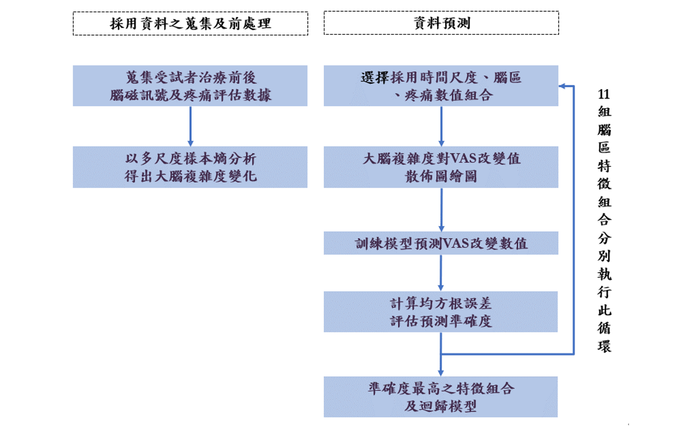

利用治療前大腦複雜度預測 tDCS 經痛緩解療效之技術開發
楊豐雒
摘要
本研究旨在透過治療前靜息態大腦複雜度預測經顱直流電刺激（transcranial direct current stimulation, tDCS）對嚴重型原發性痛經減緩之療效程度，達到利用靜息態腦波複雜度輔助疼痛緩解預測之個人化精準治療建議。研究所需實驗數據透過腦磁儀量測腦波，以多尺度樣本熵分析計算靜息態大腦複雜度，並取得受試者於tDCS治療前後填寫之經痛量表分數。於技術開發階段，以leave-one-out cross-validation方式檢視線性迴歸預測模型，計算預測與實際疼痛緩解分數間之均方根誤差，以找出預測偏誤最小之迴歸模型及特徵組合。
研究目的
本研究旨在透過治療前靜息態大腦複雜度預測tDCS對嚴重型原發性痛經減緩之療效程度，藉由大腦複雜度數據及疼痛量表數據訓練出最佳預測模型組合，目的在協助未來有需求者可透過腦磁儀觀測先行預測經顱直流電刺激療效程度。
研究過程與方法
研究成果與展望
經痛經tDCS治療可在一個月內有較顯著之疼痛減緩療效，而以治療前的靜息態大腦複雜度可預測經痛減緩程度，其中在海馬迴與視丘的腦區組合中，以兩腦區之左右半腦合併在一次方多項式模型進行預測時誤差最小，該模型組合預測視覺疼痛量表改變值誤差約為 1.0417。未來有望自腦波訊號計算海馬迴及視丘的腦複雜度，再利用本研究所提出的模型及特徵組合進行tDCS疼痛減緩程度之預測，達到臨床上作為評估是否進行tDCS療程的個人化精準醫療參考方針。